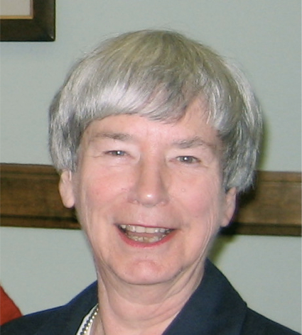

-1-MasterItem.svg)
Stories of Westminster United Church & its People / Page
182
And so we find that here at Westminster the amalgamation of the
Women’s Missionary Society and the Women’s Association, coming
together in the early 1960s and created 19 women’s groups with a
mandate to involve more women in church activities. The inaugural
service of the newly formed Westminster UCW was organized
by Marilyn Huband in October 1962. (See UCW Scrapbook
items at the end of this article.)
These women’s groups, later known as ‘Women’s Units,’ were part
of Westminster life for many decades — creating opportunities for social
interaction and raising money for specific projects such as knitting
sweaters, packaging baby layettes, purchasing supplies for baby quilts
(all to be sent to the Buelah Burns mission in China) and filling
Christmas hampers. The Units were responsible not only for organizing church
luncheons, bazaars
and study groups, but also for coordinating after-church fellowship coffee time.
Every spring, all units
would get together for a Potluck Supper and an evening of socializing and
fellowship at the church. At
one such event, the ladies presented a bridal fashion show, organized by Jo
Brown, where a number
of the younger members paraded merrily through the pot-luck crowd in their
wedding gowns.
Long-lasting friendships have been formed over the years and members continue to
play a hugely
important role in the organization and support of many church programs and
events. I was able to
track down some background about 3 of the units: Unit 6, 10 and 13.
Unit 13, formed by Marilyn Huband in 1962, had the distinction of being known as
the ‘Professional
Women’s Group’ and thus always met in the evenings. Unit 13 was famous for its Westminster
Mincemeat — an initiative begun by its founder and leader. Every November the members of the
group and other volunteers brought together all the ingredients to make this
wonderful Christmas
treat as a fundraiser for the Church. As of last year, the Choir will be
continuing this tradition.
Women and Westminster United Church
